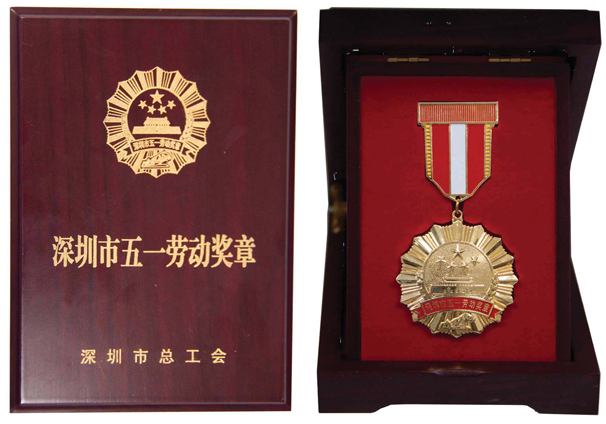
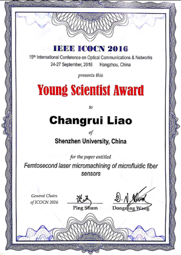

团队教师获深圳市自然科学奖一等奖、深圳市五一劳动奖章和第十五届国际光通信与网络会议（ICOCN 2016）青年科学家奖等科研奖励。
深圳市自然科学奖一等奖（2017年度）
项目名称: 光纤微结构器件的制备方法及传感机理研究
项目完成人: 王义平、廖常锐、何俊、王东宁、靳伟
项目完成单位: 深圳大学、香港理工大学
项目简介: 本项目研究了光纤微结构器件的制备方法及传感机理，研究内容包括：（1）长周期光纤光栅的CO2激光制备方法及传感机理；（2）光纤布拉格光栅的超快激光制备方法及传感机理；（3）光纤微结构干涉仪的制备方法及传感机理。研究成果达到国际领先水平，成功制备世界上第一支空气芯光子带隙光纤光栅，领先国外同行三年；突破了无光敏性光纤上制备光纤布拉格光栅的难题，成功制备世界上第一支微纳光纤布拉格光栅；揭示了光纤微腔干涉仪的导模与被测量之间的高效耦合机理。项目负责人王义平是深圳大学特聘教授、国家杰青、国家万人计划科技创新领军人才。项目完成人主持国家自然科学基金重点项目等国家级项目14项和国际合作项目6项；第一作者或通信作者发表SCI论文55篇，SCI他引1162次，单篇最高SCI他引193次；授权专利13项。本项目增强了我国在国际光电子学领域特别是光纤传感领域的领先地位，促进了深圳市物联网光纤传感产业的快速健康发展。
深圳市五一劳动奖章（王义平）
第十五届国际光通信与网络会议（ICOCN 2016）青年科学家奖（廖常锐）

